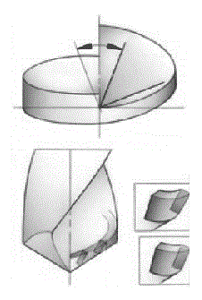

Правильное стружкодробление и охлаждающая жидкость существенные факторы при сверлении.
Образование стружки с формой и размерами, позволяющими легко удалять ее из отверстия, является первоочередным вопросом при рассмотрении любой операции сверления.
Без удовлетворительной эвакуации стружки работа сверла станет невозможной, вследствие забивания стружечных канавок и закупоривания сверла внутри отверстия.
Высокопроизводительная обработка отверстий современными сверлами, возможна только при обеспечении беспрепятственного отвода стружки посредством использования достаточного количества охлаждающей жидкости.
Большинство коротких сверл имеет две стружечные канавки для эвакуации стружки. Современное оборудование и инструмент позволяют осуществлять подвод СОЖ по внутренним каналам в сверле, через которые она поступает непосредственно в зону резания, уменьшая действие сил трения и вымывая стружку из отверстия.
Стружкообразование зависти от типа обрабатываемого материала, геометрии инструмента, режимов резания и, в некоторой степени, от выбранной охлаждающей жидкости. Обычно более мелкая стружка образуется при увеличении подачи и/или уменьшении скорости резания. Длина и форма стружки считаются удовлетворительными, если они позволяют гарантированно удалять ее из отверстия.
Передний угол (γ) у цельных твердосплавных сверл и сверл с напайными пластинами изменяется вдоль режущей кромки, уменьшаясь в направлении от периферии к центру сверла. Поскольку скорость резания также уменьшается от периферии к центру, вершина сверла не будет участвовать в резании. На вершине сверла передний угол отрицательный и скорость резания равна нулю, а это означает, что она будет просто давить материал, что повлечет за собой появление пластической деформации. А это в свою очередь приведет к увеличению осевой силы резания. Если оборудование не имеет достаточной мощности и жесткости, появляется биение шпинделя и в результате форма отверстия может получиться овальной.
Применение современных сверл со сменными пластинами позволяет вести обработку с высокими скоростями и большими объемами образующейся стружки, которая вымывается из отверстия потоками охлаждающей жидкости, подающейся под определенным давлением по внутренним каналам. Необходимые давление (МПа) и объем (л/мин) СОЖ зависят от диаметра отверстия, а также от условий обработки и типа материала заготовки.
При внутреннем подводе СОЖ для вращающегося сверла, ее давление должно быть выше, по сравнению со сверлом невращающимся, из-за влияния центробежной силы. В этом случае рекомендуется компенсировать недостаток давления дополнительным объемом жидкости. Определенные потери давления при прохождении по трубопроводам должны также учитываться для невращающегося сверла и при наружном подводе СОЖ. Необходимо проверить давление и расход СОЖ, причем последний не должен быть меньше рекомендованного значения, а резервуар для СОЖ должен вмещать достаточное количество жидкости. Расход СОЖ проверяется на выходе из сверла, т.е. там, где его величину необходимо обеспечить. Минимальные значения расхода и давления СОЖ рекомендуются в соответствии с типом и диаметром сверла.